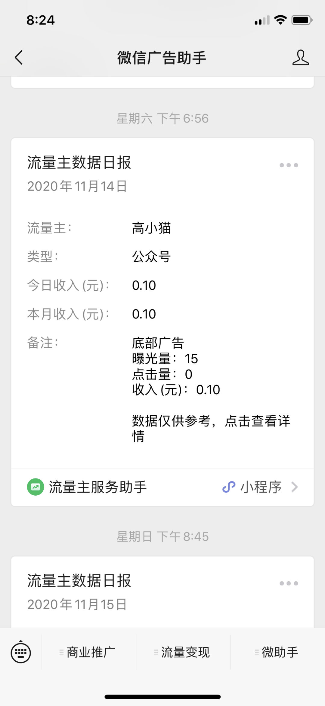
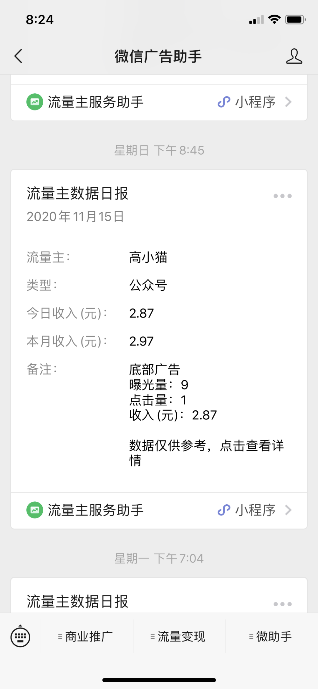
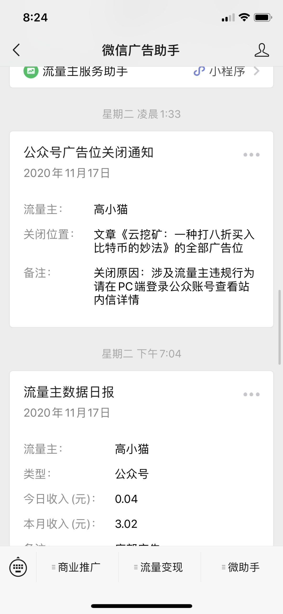
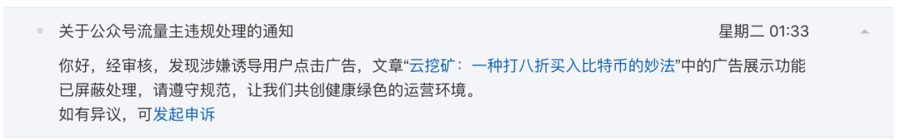
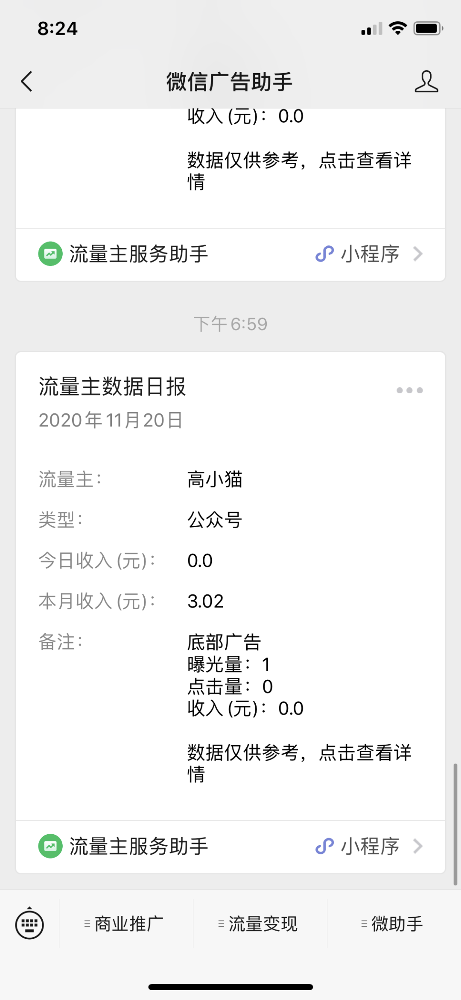
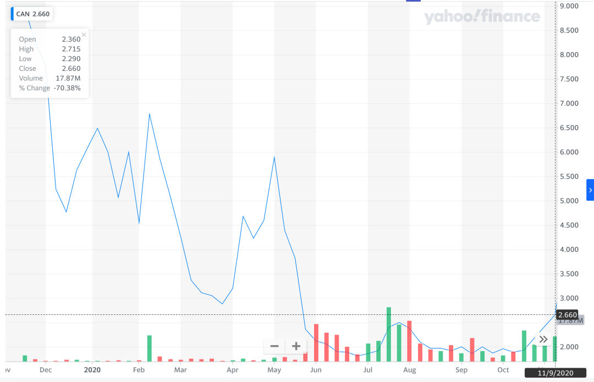
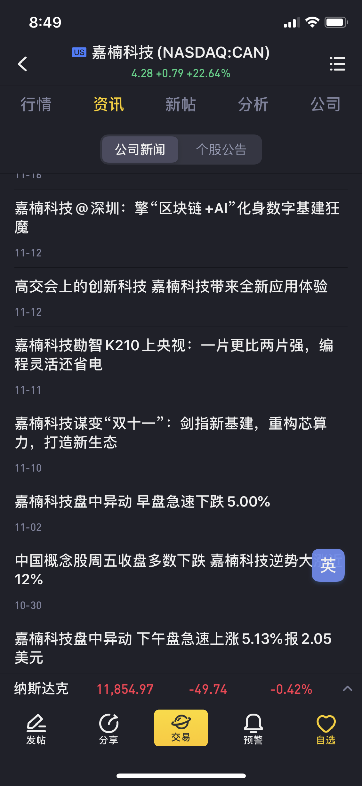
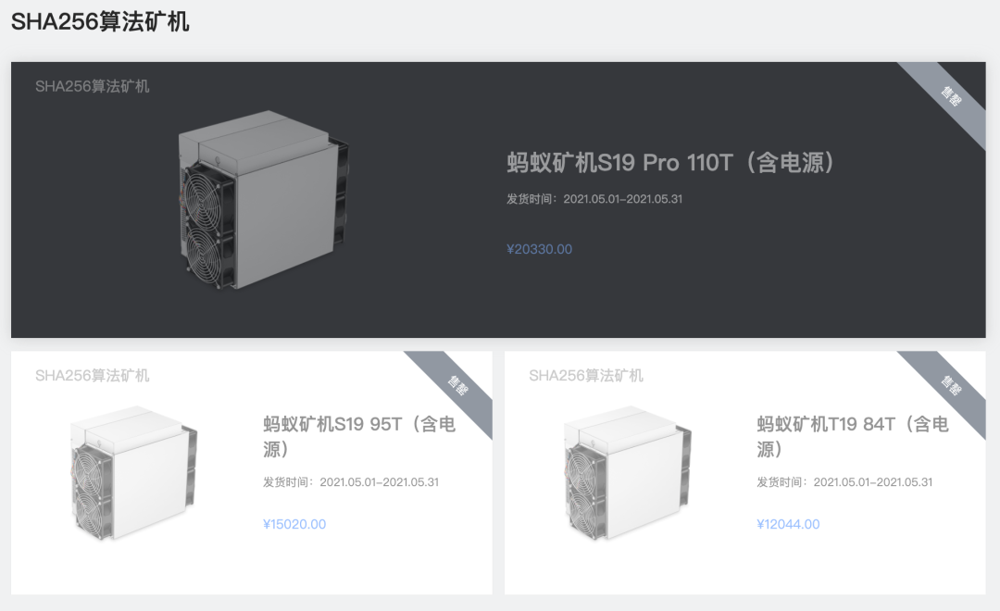
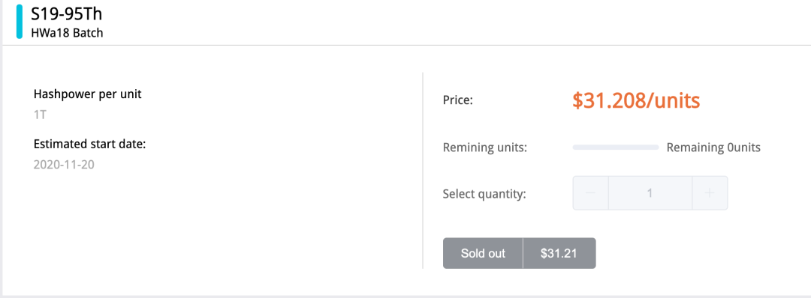
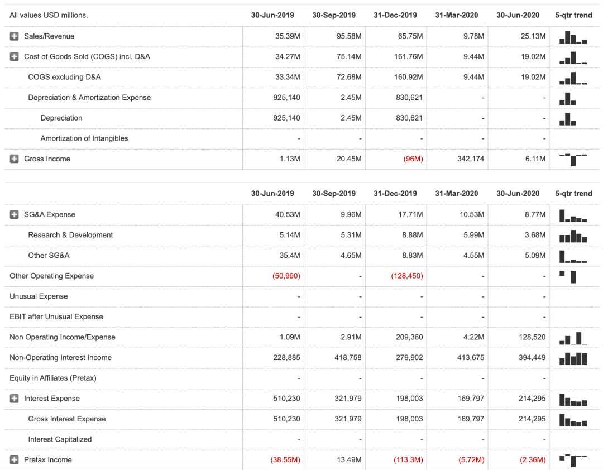

--------点击蓝字关注我--------
微信号：gaoxiaomao88
--------点击蓝字关注我--------
微信号：gaoxiaomao88
--------------------
首先兑现一下承诺，来展示一下我这边微信公众号平台的广告收益。
如图所示，第一天我有15个曝光量，净赚0.1人民币。

第二天有9个曝光量，一个点击量，于是获得了2.87元的收入。一个点击居然有2.87元的收入！这个有点惊讶到我了。

第三天我就被平台把我的广告位关了，理由居然是因为我涉嫌违规操作，那么到底是什么样的违规操作呢？

原来是因为我涉嫌诱导用户点击广告，好吧。。。原来这是不允许的，我以后一定注意。

于是再之后我就再也没有什么点击收入了。截止昨天，我的总收入停留在了3.02人民币，感谢各位读者的赏光，以后我再也不会诱导用户点击广告了。

----------------------
正文开始。
今天我想分享一个生产比特币矿机的公司，以及它的股票。
熟悉我的朋友也许知道，我其实不是一个很懂股票的人。财报也都是一知半解，偶尔瞄两眼这样子。
上周我在跟朋友分享云挖矿的这个业务的时候，感叹可惜没法买这些生产矿机的公司股票，不然就赚翻了。
毕竟随着币价的上涨，这些矿机的卖价和销量也是水涨船高，盈利肯定会增长特别多的。
当时就有一个朋友说，虽然比特大陆没有上市，但是排名第二的矿机公司嘉楠科技有上市呀，你可以去看看。
于是当天晚上我就好奇地去扒了一下这个公司，当时是11月12日，嘉楠公司的股价从2019年11月的13美金，一路跌到2020年6月最低的1.76美金，然后又一路回升到2.6美金。

从1.76到2.6美金，其实已经上升了不少了。这个时候我疑惑的是，是否有人关注到他们矿机的盈利大幅上涨这件事情了呢？
于是我就开始搜索嘉楠科技的相关新闻，但是最上面的新闻居然是这个。AI芯片？似乎完全没有关系嘛。

我又仔细看了一眼嘉楠科技的财报，上一期的财报还是2020年截止8月31日的财报，报告的是2020年3月-6月间公司的营业情况。
比特币在2020年3月份的时候其实是近期历史上的最低点，由于矿机的销售相对于币价有很大的滞后效应，所以虽然3-6月间比特币回升了不少，3-6月的财报也可能会不太漂亮。
具体到销售价格来说，就是他们卖出的算力价格会很便宜。事实上也确实如此，下面是我从他们财报中截出来的一段话。
Total computing power sold was 2.6 million Thash/s, representing a year-over-year decrease of 18.2% from 3.2 million Thash/s in the same period of 2019 and a quarter-over-quarter increase of 198.5% from 0.9 million Thash/s in the first quarter of 2020.
Total net revenues decreased by 26.3% year over year and increased by 160.9% quarter over quarter to RMB178.1 million (US$25.2 million) from RMB241.5 million in the same period of 2019 and RMB68.3 million in the first quarter of 2020.
从这段话中可以看出，在这三个月中，他们一共卖出了2.6million TH/s的算力, 相比2019年同期还下降了不少。
而且公司在这三个月的总收入为25.2 million 美金，假设这个公司所有的收入都来自于出卖算力，那他们算力的卖价为25.2 / 2.6 = 9.69美金/TH。
而当时(11月12日的时候)在大部分的云算力平台，即使是最便宜的比特小鹿，每TH的算力也早已涨得超过25美金/TH，而且还远远供不应求。
如图为目前2020年比特大陆的矿机销售情况，可以看到即使是明年5月份的矿机期货也已经销售一空了。

按照蚂蚁矿机S19的价格来计算，95TH/S的算力卖15020人民币，相当于是15020/6.56 = 2289.6美金。2289.6美金/95TH = 24.1美金/TH。
可见当前即使是24美金/TH的算力价格，也早已供不应求。
当前莱比特云挖矿平台上31美金/TH的价格，而且回本以后还需要抽成30%，也早已销售一空。

如果我们粗略地算一下，假设在接下来的三个月，嘉楠科技售出的算力量不变，价格乘以2的话 （用24-31美金相比9.69美金）。财报会发生什么改变呢？
如下图财报所示，可以看到2020.3-6月，嘉楠科技的收入为25.13 million美金，这是基于他们的算力为9.69美金/TH计算的。
如果他们的算力价格增长一倍，那可以简单认为收入也会增长一倍，然后对应算力的成本不变，他们的Gross income就会变为25.13 * 2 - 19.02 = 31.24 million. 减掉一些别的研发成本8.77 million，还可以净盈利22.47 million。
可以看到上一次盈利这么好还在2019.7月他们公司刚上市的时候，当时的股价还在13美金，而且他们当时的净盈利也才13 million。
所以似乎这么看的话，这个股票可以涨到26美金？
反正不管如何看，即使最近暴涨了两波，涨到今天4.4美金的价格，似乎也还是低估的。
如果你感兴趣最近一期的财报数据的话，可以点击左下角的“阅读原文”查看。

当然由于我对于财报非常不专业，对于股票的估值完全是外行的，因此这边的股价估计参考价值不大。这边的分析也不构成任何投资建议，还请大家自行判断，不要参考我的任何建议。
今天的文章就写到这里啦，喜欢的朋友欢迎留言以及关注我，我们下期再见。